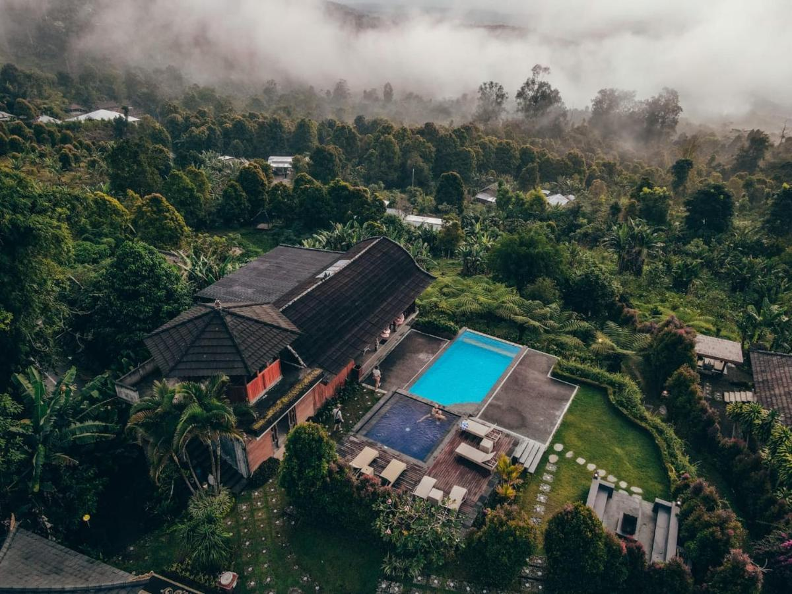
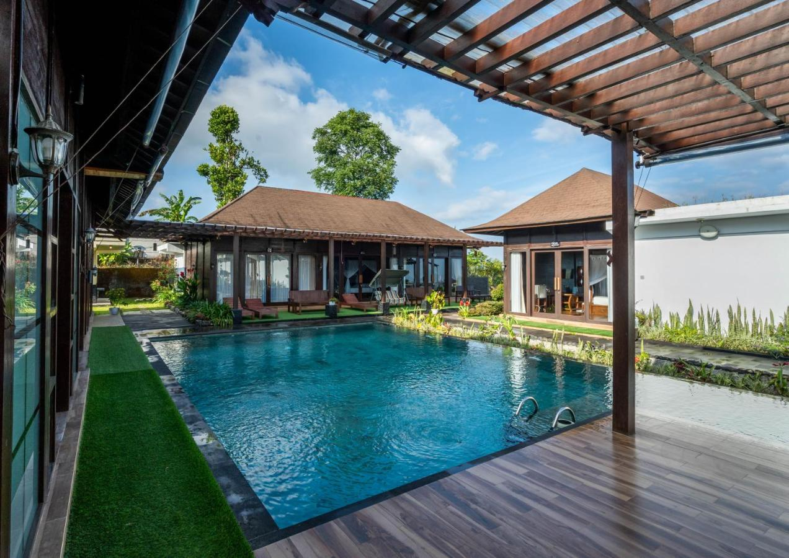

Nearby Rest Place

Munduk Kupang Sekumpul Villa
 Sekumpul Village, Sawan District
Sekumpul Village, Sawan District
 4.5 (159 Reviews)
4.5 (159 Reviews)
IDR 1.099.575
1 night, 2 adults

Munduk Menir Villas
Munduk Village, Buleleng District
4.3 (293 Reviews)
IDR 1.973.000
1 night, 2 adults

Shankara Munduk Bali
Munduk Village, Buleleng District
4.0 (293 Reviews)
IDR 1.980.000
1 night, 2 adults